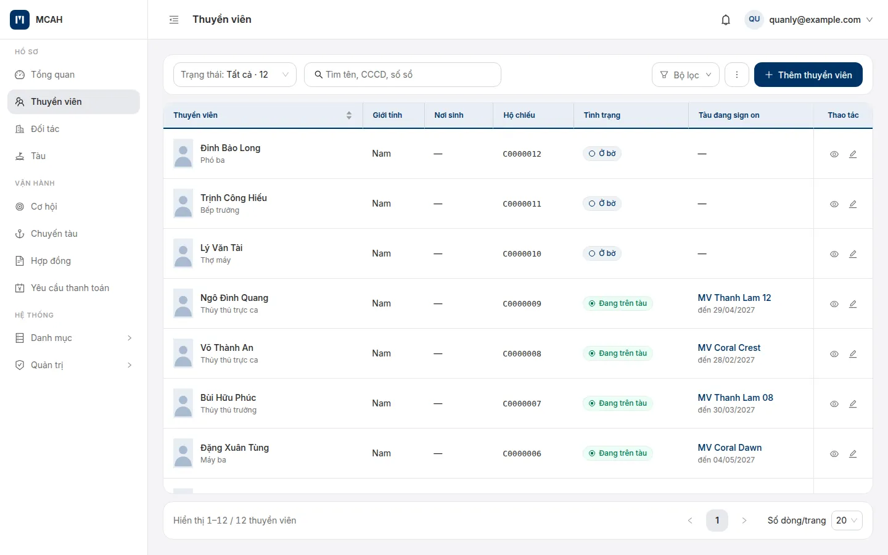
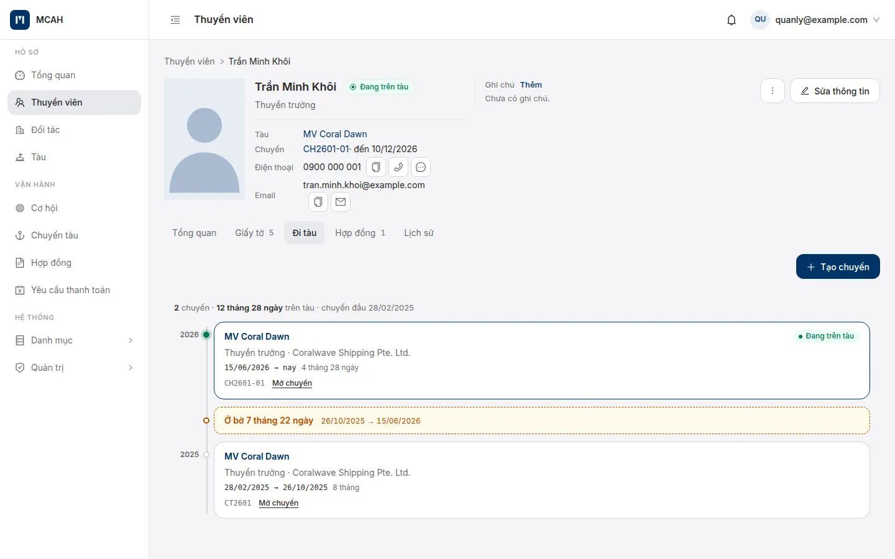

Hồ sơ
Thuyền viên
Thêm thuyền viên và làm việc với hồ sơ thuyền viên.
Mỗi thuyền viên có một hồ sơ dùng lại cho mọi cơ hội, chuyến tàu, hợp đồng. Trạng thái Đang trên tàu / Ở bờ tự đổi theo chuyến tàu, không cần sửa tay.

Thêm thuyền viên
- + Thêm thuyền viên mở form theo nhóm: thông tin chung, giấy tờ tuỳ thân, thể chất, liên hệ, ngân hàng & BHXH, gia quyến, học vấn.
- Ở form, có thể quét CCCD, hộ chiếu hoặc sổ thuyền viên để AI điền sẵn các ô; app hỏi có lưu ảnh vừa quét vào Giấy tờ không.
- Nhiều người một lúc: menu ⋮ trên danh sách → nhập từ Excel. Tải file mẫu, điền, chọn file rồi nhập.
Hồ sơ thuyền viên
Thẻ đầu trang có chức danh, tàu và chuyến hiện tại, nút gọi, nhắn, gửi mail nhanh. Bên dưới là năm tab:
| Tab | Có gì |
|---|---|
| Tổng quan | Bảy nhóm thông tin, mỗi nhóm có số ô đã điền để biết hồ sơ còn thiếu gì |
| Giấy tờ | Mọi giấy tờ, chứng chỉ, hạn và trạng thái (xem mục Giấy tờ & AI đọc giấy) |
| Đi tàu | Dòng thời gian các chuyến, tổng thời gian trên tàu, các khoảng ở bờ; nút Tạo chuyến |
| Hợp đồng | Các hợp đồng của thuyền viên này |
| Lịch sử | Ai đã sửa gì, khi nào |

Menu ⋮ ở đầu hồ sơ có Tạm ngưng thuyền viên (người tạm ngưng không chốt, không tạo chuyến được), Kích hoạt lại và Xoá thuyền viên.
ViệcQuyền cần cóThường do
Xem danh sách và hồ sơThuyền viên · Xem danh sách và hồ sơMôi giớiDuyệt & quản lý
Thêm, sửa hồ sơThuyền viên · Thêm thuyền viên, Sửa hồ sơMôi giới
Nhập từ ExcelThuyền viên · Nhập từ ExcelMôi giới
Xoá thuyền viênThuyền viên · Xoá thuyền viênQuản trị